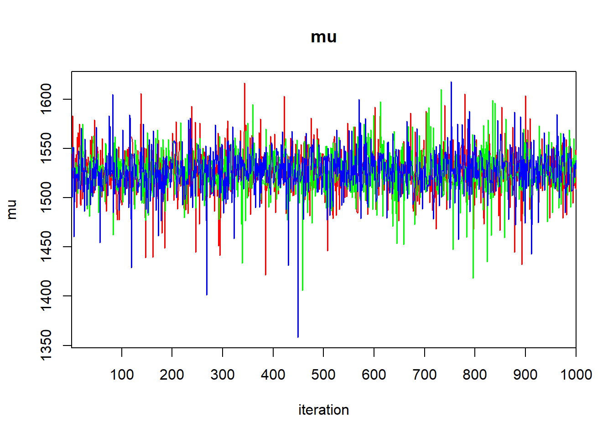
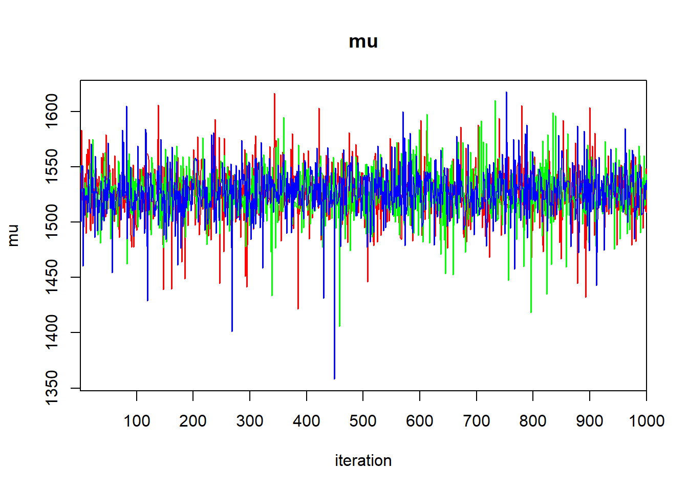

Chapter 6 Hierarchical Models
6.1 One-factor layout: Dyestuff data
We will illustrate the basic ideas of hierarchical models with the Dyestuff data contained in lme4. According to Bates (2012+), these data originally appeared in Davies (1947), and “are described in Davies and Goldsmith (1972, Table 6.3, p. 131) … as coming from ‘an investigation to find out how much the variation from batch to bach in the quality of an intermediate product contributes to the variation in the yield of the dyestuff made from it’.” The data consist of 6 batches, each of which gives rise to 5 observations.
Preparatory work:
require(lme4)## Loading required package: lme4## Loading required package: Matrixdata(Dyestuff)
summary(Dyestuff)## Batch Yield
## A:5 Min. :1440
## B:5 1st Qu.:1469
## C:5 Median :1530
## D:5 Mean :1528
## E:5 3rd Qu.:1575
## F:5 Max. :1635with(Dyestuff, stripchart(Yield ~ Batch, pch = 16))
To develop some notation, let \(i = 1, \ldots, 6\) index the batches, let \(j = 1, \ldots, 5\) index the observations within each batch, and let \(y_{ij}\) denote observation \(j\) from batch \(i\).
As a starting point, we will fit the usual one-factor ANOVA model to these data. This model is \[\begin{align} y_{ij} & = \mu_i + \varepsilon_{ij} \\ \varepsilon_{ij} & \stackrel{\text{iid}}{\sim}\mathcal{N}(0, \sigma^2). \end{align}\]
fm0 <- lm(Yield ~ 1, data = Dyestuff) # model with common mean
fm1 <- lm(Yield ~ Batch - 1, data = Dyestuff) # mean varies by group
anova(fm0, fm1) # usual F-test for differences among group means## Analysis of Variance Table
##
## Model 1: Yield ~ 1
## Model 2: Yield ~ Batch - 1
## Res.Df RSS Df Sum of Sq F Pr(>F)
## 1 29 115187
## 2 24 58830 5 56358 4.5983 0.004398 **
## ---
## Signif. codes: 0 '***' 0.001 '**' 0.01 '*' 0.05 '.' 0.1 ' ' 1summary(fm1) # eliminating the intercept gives sample means for each group##
## Call:
## lm(formula = Yield ~ Batch - 1, data = Dyestuff)
##
## Residuals:
## Min 1Q Median 3Q Max
## -85.00 -33.00 3.00 31.75 97.00
##
## Coefficients:
## Estimate Std. Error t value Pr(>|t|)
## BatchA 1505.00 22.14 67.97 <2e-16 ***
## BatchB 1528.00 22.14 69.01 <2e-16 ***
## BatchC 1564.00 22.14 70.64 <2e-16 ***
## BatchD 1498.00 22.14 67.66 <2e-16 ***
## BatchE 1600.00 22.14 72.26 <2e-16 ***
## BatchF 1470.00 22.14 66.39 <2e-16 ***
## ---
## Signif. codes: 0 '***' 0.001 '**' 0.01 '*' 0.05 '.' 0.1 ' ' 1
##
## Residual standard error: 49.51 on 24 degrees of freedom
## Multiple R-squared: 0.9992, Adjusted R-squared: 0.999
## F-statistic: 4763 on 6 and 24 DF, p-value: < 2.2e-16Now we will use nlme::gls to fit a model that assumes that the data within each batch are correlated. In other words, we fit the model
\[\begin{align}
y_{ij} & = \mu + \varepsilon_{ij} \\
\varepsilon_{ij} & \sim \mathcal{N}(0, \sigma^2) \\
\mathrm{Corr}(y_{ij}, y_{ik}) & = \rho
\end{align}\]
require(nlme)## Loading required package: nlme##
## Attaching package: 'nlme'## The following object is masked from 'package:lme4':
##
## lmListfm2 <- gls(Yield ~ 1, data = Dyestuff, correlation = corCompSymm(form = ~ 1 | Batch))
summary(fm2)## Generalized least squares fit by REML
## Model: Yield ~ 1
## Data: Dyestuff
## AIC BIC logLik
## 325.6543 329.7562 -159.8271
##
## Correlation Structure: Compound symmetry
## Formula: ~1 | Batch
## Parameter estimate(s):
## Rho
## 0.4184874
##
## Coefficients:
## Value Std.Error t-value p-value
## (Intercept) 1527.5 19.38341 78.80449 0
##
## Standardized residuals:
## Min Q1 Med Q3 Max
## -1.34770180 -0.90488550 0.03850577 0.73160955 1.65574793
##
## Residual standard error: 64.92534
## Degrees of freedom: 30 total; 29 residualThe most salient components of this output are the estimate of the overall mean, and the estimate of the within-batch correlation (\(\hat{\rho} = 0.42\)).
Now we will fit a hierarchical model that includes a random effect for the batch. We can write the model as \[\begin{align} y_{ij} & = \mu + B_i + \varepsilon_{ij} \\ B_i & \stackrel{\text{iid}}{\sim}\mathcal{N}(0, \sigma_B^2) \\ \varepsilon_{ij} & \stackrel{\text{iid}}{\sim}\mathcal{N}(0, \sigma_\varepsilon^2). \end{align}\]
fm3 <- lmer(Yield ~ 1 + (1 | Batch), data = Dyestuff)
summary(fm3)## Linear mixed model fit by REML ['lmerMod']
## Formula: Yield ~ 1 + (1 | Batch)
## Data: Dyestuff
##
## REML criterion at convergence: 319.7
##
## Scaled residuals:
## Min 1Q Median 3Q Max
## -1.4117 -0.7634 0.1418 0.7792 1.8296
##
## Random effects:
## Groups Name Variance Std.Dev.
## Batch (Intercept) 1764 42.00
## Residual 2451 49.51
## Number of obs: 30, groups: Batch, 6
##
## Fixed effects:
## Estimate Std. Error t value
## (Intercept) 1527.50 19.38 78.8The estimate of the overall mean is the same as it is in the GLS fit. Note also that we can recover the estimate of the within-batch correlation from the estimates of the variances of the random effects:
var.B <- 1764
var.eps <- 2451
var.B / (var.B + var.eps)## [1] 0.4185053To obtain the conditional modes (BLUPs) of the batch-level random effect, we can use the command ranef:
ranef(fm3)## $Batch
## (Intercept)
## A -17.6068514
## B 0.3912634
## C 28.5622256
## D -23.0845385
## E 56.7331877
## F -44.9952868
##
## with conditional variances for "Batch"The conditional modes given here correspond to the differences between the mean for each batch and the overall mean (\(\mu\)). To convert these to best guesses for the mean of each batch, we have to the overall mean back. This can be done by using the command fixef to extract the lone fixed-effect estimate from the model:
(batch.conditional.modes <- (fixef(fm3) + ranef(fm3)$Batch$`(Intercept)`))## [1] 1509.893 1527.891 1556.062 1504.415 1584.233 1482.505It is informative to compare the conditional models for each batch to the sample means. We can calculate the sample means with the tapply function
(batch.means <- with(Dyestuff, tapply(Yield, Batch, mean)))## A B C D E F
## 1505 1528 1564 1498 1600 1470These are the same as the LS estimates of the batch-specific means in the ANOVA model, fm1. Now plot the sample means against the conditional modes:
cbind(batch.means, batch.conditional.modes)## batch.means batch.conditional.modes
## A 1505 1509.893
## B 1528 1527.891
## C 1564 1556.062
## D 1498 1504.415
## E 1600 1584.233
## F 1470 1482.505plot(x = batch.means,
y = batch.conditional.modes,
xlim = range(batch.means),
ylim = range(batch.means),
xlab = "sample means",
ylab = "conditional modes",
pch = LETTERS[1:6])
abline(a = 0, b = 1)
The conditional modes are “shrunken” towards the global mean relative to the sample means. Why is this so?
To conduct inferences about the parameters in the hierarchical model, lme4::lmer offers likelihood profiling. This is the same idea that we encountered when we were using the likelihood to calculate profile-based confidence intervals earlier in the course. lme4::lmer does all its profiling on the ML fit, so we begin by refitting our hierarchical model using ML. To do so, set the optional argument REML to FALSE.
fm3ML <- lmer(Yield ~ 1 + (1 | Batch), data = Dyestuff, REML = FALSE)
summary(fm3ML)## Linear mixed model fit by maximum likelihood ['lmerMod']
## Formula: Yield ~ 1 + (1 | Batch)
## Data: Dyestuff
##
## AIC BIC logLik deviance df.resid
## 333.3 337.5 -163.7 327.3 27
##
## Scaled residuals:
## Min 1Q Median 3Q Max
## -1.4315 -0.7972 0.1480 0.7721 1.8037
##
## Random effects:
## Groups Name Variance Std.Dev.
## Batch (Intercept) 1388 37.26
## Residual 2451 49.51
## Number of obs: 30, groups: Batch, 6
##
## Fixed effects:
## Estimate Std. Error t value
## (Intercept) 1527.50 17.69 86.33Switching to ML has decreased our estimate of the batch-level variance, and decreased it by quite a bit. To construct profile-based intervals, we use the lme4::profile function. We will use the xyplot function from the lattice package to display the profiles.
pr <- profile(fm3ML)
lattice::xyplot(pr)
There are three panels here, one for each of the parameters in the model. These parameters are labeled as \(\sigma_1\) for the standard deviation of the block-level random effect (what we have written \(\sigma_B\)), \(\sigma\) for the standard deviation of the errors (what we have written as \(\sigma_\varepsilon\)), and “(Intercept)” for the global mean (what we have written as \(\mu\)).
Within each panel, the values plotted on the vertical axis are the signed square roots of the likelihood ratio test statistic. This value is denoted by the Greek letter \(\zeta\) (“zeta”); hence, the plots we are viewing are called zeta-plots.
I do not know how widely used zeta-plots are. They may be more common in other realms of science, although I have never encountered them outside lme4. Basically, they are a visualization of profile-likelihood based confidence intervals. The vertical lines in each panel give the limits of (working from the inside out) 50%, 80%, 90%, 95%, and 99% confidence intervals for each parameter. We can also extract these confidence limits using the confint function. Below, we show 95% confidence intervals; of course, one can change the confidence level as needed.
confint(pr, level = .95)## 2.5 % 97.5 %
## .sig01 12.19854 84.06305
## .sigma 38.22998 67.65770
## (Intercept) 1486.45150 1568.54849So, a 95% confidence interval for \(\mu\) ranges from 1486 to 1569.
Here is a bit more about the logic behind zeta plots (feel free to skip this paragraph if you wish). Recall that negative log-likelihood profiles are convex and approximately quadratic. Plotting the LRT statistic instead of the likelihood itself has the effect of placing the nadir of these curves at 0, instead of at the value of the negative log-likelihood. Taking the square root of the LRT statistic converts a quadratic curve (a u-shape) into a linear one (a v-shape). We can see this v-shape by using the optional argument absVal = TRUE:
lattice::xyplot(pr, absVal = TRUE)
The purpose of using a signed square root is to turn these V-shaped plots into straight lines. Straight lines are useful in turn because if the profile log likelihood is actually quadratic, then the zeta plot will yield a perfectly straight line, and thus a local approximation to the confidence interval will be appropriate. If the zeta-plot is non-linear, then the confidence interval becomes more asymmetric, and a local approximation fares more poorly.
(Start reading again if you skipped the above detail). There is an interesting detail to the zeta-plots. Consider the zeta-plot for \(\sigma_1\) (the standard deviation of the batch-level random effects), and try to find the lower limit of a 99% confidence interval. You’ll notice that the zeta-plot hits 0 (the lowest possible value for a standard deviation) before the interval is completed. Thus, the lower limit of this interval is 0:
confint(pr, level = 0.99)## 0.5 % 99.5 %
## .sig01 0.00000 113.68769
## .sigma 35.56317 75.66803
## (Intercept) 1465.87401 1589.12602Although we are not much in the habit of conducting hypothesis tests in this course, we would conclude that we would fail to reject the null hypothesis that the batch-level variance equals 0 with a 99% level test.
There is a second approach to calculating confidence intervals and/or conducting hypothesis tests for fixed-effect parameters. Famously, lme4::lmer does not provide degrees of freedom for the estimates of the fixed effects. The package lmerTest uses the Satterthwaite approximation to estimate these df.
require(lmerTest)## Loading required package: lmerTest## Warning: package 'lmerTest' was built under R version 4.1.1##
## Attaching package: 'lmerTest'## The following object is masked from 'package:lme4':
##
## lmer## The following object is masked from 'package:stats':
##
## stepfm4 <- lmerTest::lmer(Yield ~ 1 + (1 | Batch), data = Dyestuff)
summary(fm4)## Linear mixed model fit by REML. t-tests use Satterthwaite's method [
## lmerModLmerTest]
## Formula: Yield ~ 1 + (1 | Batch)
## Data: Dyestuff
##
## REML criterion at convergence: 319.7
##
## Scaled residuals:
## Min 1Q Median 3Q Max
## -1.4117 -0.7634 0.1418 0.7792 1.8296
##
## Random effects:
## Groups Name Variance Std.Dev.
## Batch (Intercept) 1764 42.00
## Residual 2451 49.51
## Number of obs: 30, groups: Batch, 6
##
## Fixed effects:
## Estimate Std. Error df t value Pr(>|t|)
## (Intercept) 1527.50 19.38 5.00 78.8 6.23e-09 ***
## ---
## Signif. codes: 0 '***' 0.001 '**' 0.01 '*' 0.05 '.' 0.1 ' ' 1lmerTest::lmer gives the associated df for the estimate of the intercept as 5. If this were a class in experimental design, we would regard the individual measurements from each batch as subsamples, in which case the correct df for inferences about the intercept should be \(6 - 1 = 5\). In this case, the calculation from lmerTest::lmer matches our intuition.
Equipped with this information, we could construct a 95% confidence interval for the overall mean as
1527.5 + 19.38 * qt(c(0.025, 0.975), df = 5)## [1] 1477.682 1577.318Compare this interval with the profile interval generated by lme4::profile.
6.2 Bayesian analysis
The mixed-model formulation is our first encounter with a hierarchical model. One often hears the phrase “Bayesian hierarchical model” in ecology. It is important to realize that not all Bayesian models are hierarchical, and not all hierarchical models are Bayesian. Indeed, we have seen examples of both: none of the Bayesian examples that we have seen in earlier chapters were hierarchical, and the mixed-model analysis of the Dyestuff data is a hierarchical model analyzed from a frequentist perspective. However, we can certainly analyze hierarchical models from a Bayesian perspective as well, leading to a Bayesian hierarchical model.
The above paragraph begs the question: What defines a hierarchical model? One can find definitions in the literature, though it isn’t clear to me that any of these definitions are fully precise, although I may just be ignorant. As best I can tell, a hierarchical model is one that includes so-called “latent” variables. Latent variables are unobservable quantities on which the data depend, that in turn are related to model parameters via a statistical model. This “layered” construction of the model (observables depend on latent variables, and latent variables depend on model parameters) gives rise to the “hierarchy” that gives hierarchical models their name.
This hierarchical perspective gives rise to an alternative formulation of the model. This model is mathematically identical to the random-effects formulation above, but it emphasizes the hierarchical nature of the model a bit more. For the dyestuff data, we might write the model as \[\begin{align} B_i & \stackrel{\text{iid}}{\sim}\mathcal{N}(\mu, \sigma^2_B) \\ y_{ij}| B_i & \stackrel{\text{iid}}{\sim}\mathcal{N}(B_i, \sigma^2_\varepsilon) \\ \end{align}\]
The hierarchical formulation states that the batch-specific means (the \(B_i\)’s) are latent variables drawn independently from a Gaussian distribution with mean \(\mu\) and variance \(\sigma^2_B\). Conditional on the \(B_i\)’s, the observable data are drawn from a Gaussian distribution with mean \(B_i\) and variance \(\sigma^2_\varepsilon\).
To complete the Bayesian specification, we need to place priors on our three parameters: \(\mu\), \(\sigma^2_B\), and \(\sigma^2_\varepsilon\). In the absence of any information, we might choose a vague normal prior for \(\mu\), and vague gamma priors for \(1/\sigma^2_B\) and \(1/\sigma^2_\varepsilon\). The following R2Jags code implements such a model.
require(R2jags)## Loading required package: R2jags## Warning: package 'R2jags' was built under R version 4.1.1## Loading required package: rjags## Warning: package 'rjags' was built under R version 4.1.1## Loading required package: coda## Linked to JAGS 4.3.0## Loaded modules: basemod,bugs##
## Attaching package: 'R2jags'## The following object is masked from 'package:coda':
##
## traceplotdyestuff.model <- function() {
## likelihood
for (j in 1:J) {
y[j] ~ dnorm(B[batch[j]], tau_eps) # data distribution
}
## latent variables
for (b in 1:6){
B[b] ~ dnorm(mu, tauB)
}
mu ~ dnorm (0.0, 1E-6) # prior for the overall mean
tau_eps ~ dgamma (0.01, 0.01)
tauB ~ dgamma (0.01, 0.01)
sd_eps <- pow(tau_eps, -1/2)
sdB <- pow(tauB, -1/2)
}
jags.data <- list(y = Dyestuff$Yield,
batch = as.numeric(Dyestuff$Batch),
J = nrow(Dyestuff))
jags.params <- c("mu", "sd_eps", "sdB", "B[1]", "B[2]")
jags.inits <- function(){
list("mu" = rnorm(1, .01), "tauB" = runif(1), "tau_eps" = runif(1))
}
set.seed(1)
jagsfit <- jags(data = jags.data,
inits = jags.inits,
parameters.to.save = jags.params,
model.file = dyestuff.model,
n.chains = 3,
n.iter = 1e5)## module glm loadedThe code above requires a way to associate each observation with the batch from which the observation was drawn. We accomplish this by creating the variable batch that associates each observation with the numerical index of the batch. (That is, batch “A” is associated with the index 1, etc.) In the code, this happens with the line
batch = as.numeric(Dyestuff$Batch)The as.numeric command returns numerical values for each level of the factor Batch.
Note also that we have only asked for the posterior draws for the latent means of the first two batches, \(B_1\) and \(B_2\). This is merely to keep the output small for this example. We could of course ask for the means of the other batches as well.
Let’s have a look at the output:
print(jagsfit)## Inference for Bugs model at "C:/Users/krgross/AppData/Local/Temp/Rtmpyou3qh/modelc3424001d3.txt", fit using jags,
## 3 chains, each with 1e+05 iterations (first 50000 discarded), n.thin = 50
## n.sims = 3000 iterations saved
## mu.vect sd.vect 2.5% 25% 50% 75% 97.5% Rhat
## B[1] 1513.362 22.375 1471.329 1500.347 1514.592 1527.349 1551.127 1.008
## B[2] 1527.140 21.282 1488.362 1515.118 1527.513 1539.242 1565.028 1.008
## mu 1525.971 23.850 1481.395 1514.107 1526.465 1538.276 1569.052 1.006
## sdB 38.744 26.358 0.269 23.345 36.521 51.151 101.022 1.002
## sd_eps 54.105 12.349 39.388 47.081 52.538 59.337 75.857 1.001
## deviance 323.591 7.099 314.873 318.505 321.822 327.461 337.074 1.001
## n.eff
## B[1] 3000
## B[2] 1500
## mu 3000
## sdB 3000
## sd_eps 3000
## deviance 3000
##
## For each parameter, n.eff is a crude measure of effective sample size,
## and Rhat is the potential scale reduction factor (at convergence, Rhat=1).
##
## DIC info (using the rule, pD = var(deviance)/2)
## pD = 25.2 and DIC = 348.8
## DIC is an estimate of expected predictive error (lower deviance is better).traceplot(jagsfit) 

 


require(lattice)## Loading required package: latticejagsfit.mcmc <- as.mcmc(jagsfit)
densityplot(jagsfit.mcmc)
As of this writing, there are some aspects of the output that I don’t understand. The traceplots show that one chain starts far away from the region of high posterior density and then rapidly converges to it. This behavior seems to persist regardless of how long the burn-in period is, which doesn’t make sense to me. I also do not understand why densityplot produces a 6-by-1 stack of panels instead of a more useful layout. Some of this may have to do with the interaction between R2jags and rbookdown, the version of R Markdown that I am using to create this document.
One especially appealing aspect of analyzing this model from a Bayesian perspective is that there is no awkwardness in analyzing the posterior distributions of the latent variables, namely, the batch-specific means. From the frequentist perspective, it is somewhat awkward (though not prohibitively so) to define the conditional modes (BLUPs). We also lack straightforward methods for quantifying the uncertainty in these conditional modes. From the Bayesian viewpoint, this awkwardness disappears, because the distinction between model parameters and latent variables vanishes. Both are simply unobserved quantities. Consequently, it is natural to summarize our posterior knowledge about the latent variables by their (marginal) posterior distributions, in the same way that we use marginal posteriors to summarize our inferences about the model parameters.